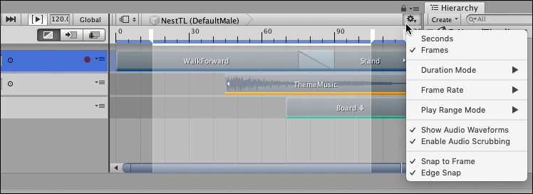
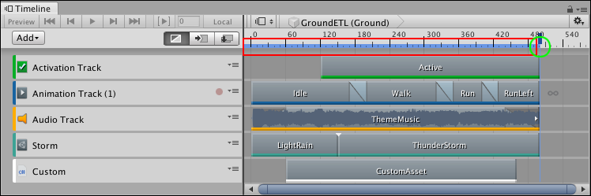
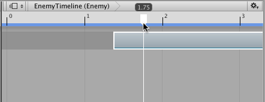

Timeline Settings¶
Use the Timeline Settings to choose the Timeline window and Timeline Asset settings such as the unit of measurement, the duration mode, audio waveform, and window snap settings.

Click the Cog icon in the Timeline window to view the Timeline Settings menu
Time Unit¶
Select either Frames, Timecode or Seconds to set the Timeline window to display time in that format. Timecode will display the time in seconds with sub-second values displayed in frames.
Duration Mode¶
Use the Duration Mode to set whether the duration of the Timeline Asset extends to the end of the last clip (Based On Clips), or ends at a specific time or frame (Fixed Length). When the Duration Mode is set to Fixed Length, use one of the following methods to change the length of the Timeline Asset:
Select the Timeline Asset in the Project window and use the Inspector window to set the Duration in seconds or frames.
In the Timeline window, drag the blue marker on the timeline. The blue marker indicates the end of the Timeline Asset. A blue line indicates the duration of the Timeline Asset.

Timeline Asset duration (red rectangle) and end marker (green circle)
Frame Rate¶
Select one of the options under Frame Rate to set the unit of measurement for the Timeline ruler. Change the Frame Rate to align clips at precise frames but changing the Frame Rate is only visual and has no effect on play speed, keys, tracks, or clips. The following standard frame rates are listed: Film (24 fps), PAL (25 fps), NTSC (29.97 fps), 30, 50, or 60.
Timeline supports custom frame rates from 1e-6 to 1000. To set a custom frame rate, you must use the Frame Rate property in the Timeline Asset settings. When the Timeline Asset is set to a custom frame rate, the Custom menu item is enabled and is automatically selected for the Timeline instance. The Custom menu item shows the custom frame rate in parentheses.
Show Audio Waveforms¶
Enable Show Audio Waveforms to draw the waveforms for all audio clips on all audio tracks. For example, use an audio waveform as a guide when manually positioning an Audio clip of footsteps with the Animation clip of a humanoid walking. Disable Show Audio Waveform to hide audio waveforms. Show Audio Waveforms is enabled by default.
Enable Audio Scrubbing¶
Enable Audio Scrubbing to play audio while dragging the Timeline Playhead.
Disable Enable Audio Scrubbing to stop playing audio while dragging the Timeline Playhead. When disabled, Timeline only plays audio when in Timeline Playback mode.
Snap to Frame¶
Enable Snap to Frame to manipulate clips, preview Timeline instances, drag the Timeline Playhead, and position the Timeline Playhead using frames. Disable Snap to Frame to use subframes. Snap to Frame is enabled by default.

Disable Snap to Frame to position clips and drag the playhead between frames
For example, when Snap to Frame is disabled and you drag the Timeline Playhead, it moves the playhead between frames. The format of Playhead Location displays differently depending on whether the Timeline window is set to Seconds, Timecode or Frames:
When the Timeline window is set to Frames, the Playhead Location shows frames and subframes. For example, 8 frames and 34 subframes displays as 8.34.
When the Timeline window is set to Timecode, the Playhead Location shows seconds, frames, and subframes. For example, 6 seconds, 17 frames, and 59 subframes displays as 6:17 [.59].
When the Timeline window is set to Seconds, the Playhead Location shows seconds. For example, 6.5 seconds displays as 6:50.
Manipulating clips, previewing Timeline instances, and positioning the playhead at the subframes level is useful when attempting to synchronize animation and effects with audio. Many high-end audio processing software products create audio waveforms with subframe accuracy.
Edge Snap¶
Enable the Edge Snap option to snap clips when you position, trim, and create blends.
When enabled, the Timeline window snaps the start or end of a clip when dragged within 10 pixels of the Timeline Playhead, the start or end of a clip on the same track, the start or end of a clip on another track, or the start or end of the entire Timeline instance. The start guide or end guide is redrawn in white to indicate that the clip has snapped to the edge of another clip or the Timeline Playhead.
Disable Edge Snap to create more accurate blends, ease-ins, or ease-outs. Edge Snap is enabled by default.